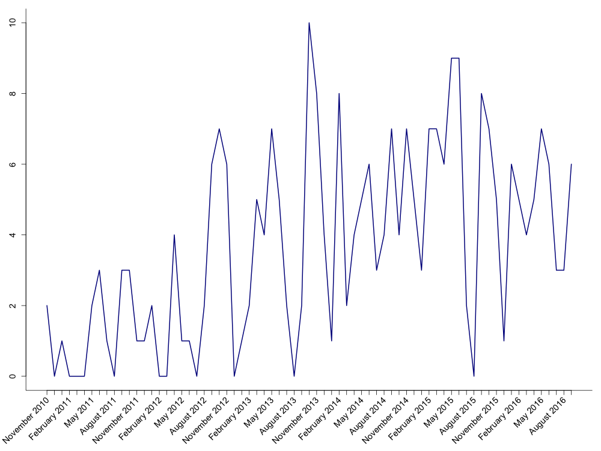
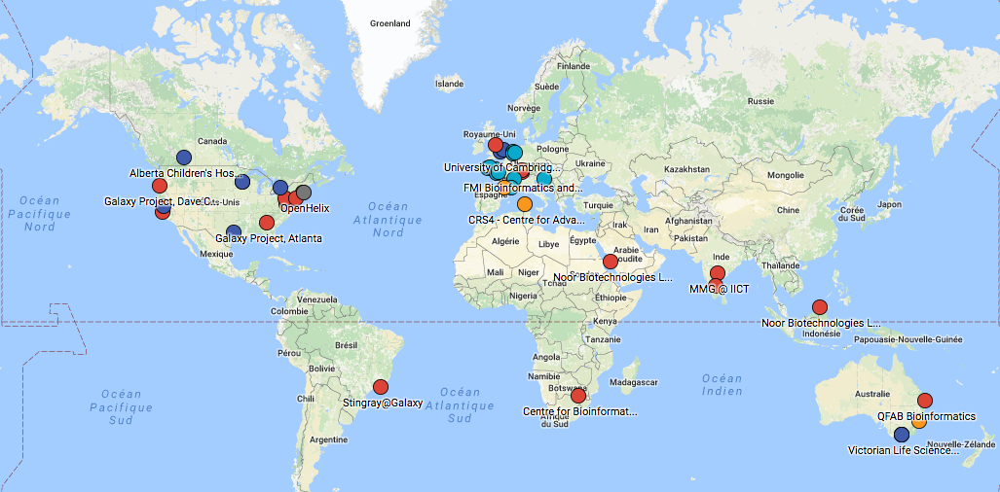

<!doctype html>
<html lang="en">

    <head>
        <meta charset="utf-8">

        <title>	Galaxy Training Network - rebooted | October, 2016 | Bérénice Batut</title>

        <link rel="stylesheet" href="reveal.js/css/reveal.css">
        <link rel="stylesheet" href="reveal.js/css/theme/simple.css" id="theme">

        <!-- Code syntax highlighting -->
        <link rel="stylesheet" href="reveal.js/lib/css/zenburn.css">
        <link rel="stylesheet" href="font-awesome/css/font-awesome.min.css">

        <link rel="stylesheet" href="css/custom.css" id="theme">

        <!-- Printing and PDF exports -->
        <script>
          if( window.location.search.match( /print-pdf/gi ) ) {
            var link = document.createElement( 'link' );
            link.rel = 'stylesheet';
            link.type = 'text/css';
            link.href = 'reveal.js/css/print/pdf.css';
            document.getElementsByTagName( 'head' )[0].appendChild( link );
          }
        </script>
        <!--<script>
            if (window.location.search.match(/print-pdf/gi)) {
                document.write('<link rel="stylesheet" href="css/pdf.css" type="text/css">');
            }
        </script>-->

        <!--[if lt IE 9]>
        <script src="reveal.js/lib/js/html5shiv.js"></script>
        <![endif]-->
    </head>

    <body>
        <div class="reveal">

            <!-- Any section element inside of this container is displayed as a slide -->


            <div class="slides">
                <section data-markdown>
                    <script type="text/template">
                        Hello! I am [Bérénice](http://bebatut.fr/), the author of following slides.

                        <small>
                        This slide does not exist in original deck. It is useful if you are not familiar with [Reveal.JS](https://github.com/hakimel/reveal.js), used here.
                        </small>

                        The easiest way to navigate this slide deck is by hitting `[space]`on your keyboard.
                    </script>
                </section>


                <section data-markdown>
                    <script type="text/template">
                        

                        *Bérénice Batut - University of Freiburg*

                        <small>
                        Swiss German Galaxy Days<br/>
                        October 20th, 2016
                        </small>
                    </script>
                </section>

                <section>

                    <section data-markdown>
                        <script type="text/template">
                        ### Increase of Galaxy's popularity...

                        

                        <small>
                        New user registration per month on [Public Galaxy Main Instance](https://usegalaxy.org/) <br/>
                        [Galaxy Project Statistics](https://wiki.galaxyproject.org/GalaxyProject/Statistics)
                        </small>
                        </script>
                    </section>

                    <section data-markdown>
                        <script type="text/template">
                        ### ...thanks to Training and Workshops

                        

                        <small>
                        Workshops registered on [Galaxy events calendar](https://wiki.galaxyproject.org/Events)
                        </small>
                        </script>
                    </section>

                    <section data-markdown>
                        <script type="text/template">
                        ### Here, in Freiburg

                        Since 2013

                        - 8 Workshops
                        - 237 participants

                        </script>
                    </section>

                    <section data-markdown>
                        <script type="text/template">
                        ### Worldwide workshops

                        </script>
                    </section>

                    <section data-markdown>
                        <script type="text/template">
                        ### Worldwide workshops and trainers

                        

                        <small>
                        [Galaxy Training Network](https://www.google.com/maps/d/u/0/viewer?mid=1r8LJy6la-JeIrg23aZjpwVNjJDE)
                        </small>
                        </script>
                    </section>

                    <section data-background-image="images/gtn_explanation.png">
                    </section>

                    <section data-markdown>
                        <script type="text/template">
                        ### [Galaxy Training Resources](https://wiki.galaxyproject.org/Teach/Resources)

                        <ul class="me">
                            <li><p><i class="fa fa-thumbs-o-up" aria-hidden="true"></i> Numerous ressources</p></li>
                            <li><p><i class="fa fa-thumbs-o-up" aria-hidden="true"></i> Numerous topics</p></li>
                            <li><p><i class="fa fa-thumbs-o-up" aria-hidden="true"></i>  <i class="fa fa-thumbs-o-down" aria-hidden="true"></i> Numerous formats</p></li>
                            <li><p><i class="fa fa-thumbs-o-down" aria-hidden="true"></i> Lot of redundancy</p></li>
                            <li><p><i class="fa fa-thumbs-o-down" aria-hidden="true"></i> Difficulty to keep up to date</p></li>

                        </script>
                    </section>

                    <section data-markdown>
                        <script type="text/template">
                        
                    </script>
                </section>
                </section>

            </div>

        </div>

        <script type="text/javascript" src="reveal.js/lib/js/head.min.js"></script>
        <script type="text/javascript" src="reveal.js/js/reveal.js"></script>
        <script type="text/javascript">
            Reveal.initialize({
                slideNumber: !window.location.search.match(/print-pdf/gi),
                history: true,

                theme: Reveal.getQueryHash().theme,
                transition: Reveal.getQueryHash().transition || 'concave',

                dependencies: [
                    { src: 'reveal.js/lib/js/classList.js', condition: function() { return !document.body.classList; } },
                    { src: 'reveal.js/plugin/markdown/marked.js', condition: function() { return !!document.querySelector( '[data-markdown]' ); } },
                    { src: 'reveal.js/plugin/markdown/markdown.js', condition: function() { return !!document.querySelector( '[data-markdown]' ); } },
                    { src: 'js/highlight.js', async: true, callback: function() { hljs.initHighlightingOnLoad(); } },
                    { src: 'reveal.js/plugin/math/math.js', async: true },
                    { src: 'reveal.js/plugin/notes/notes.js', async: true },
                ]
            });
        </script>

    </body>
</html>
